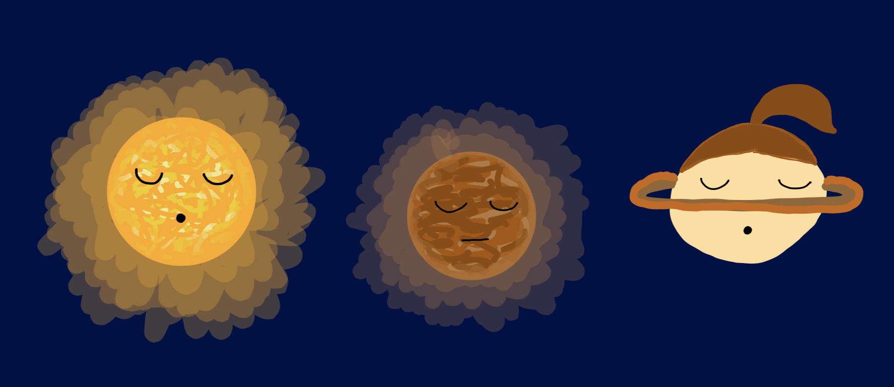
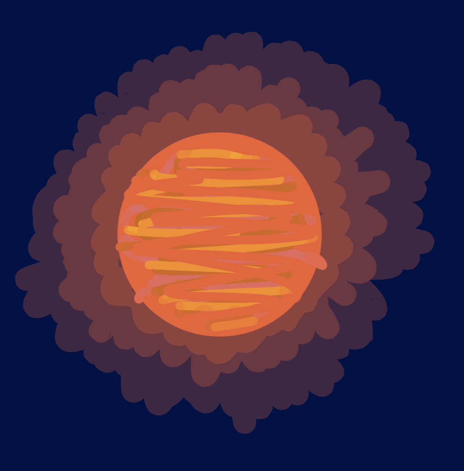
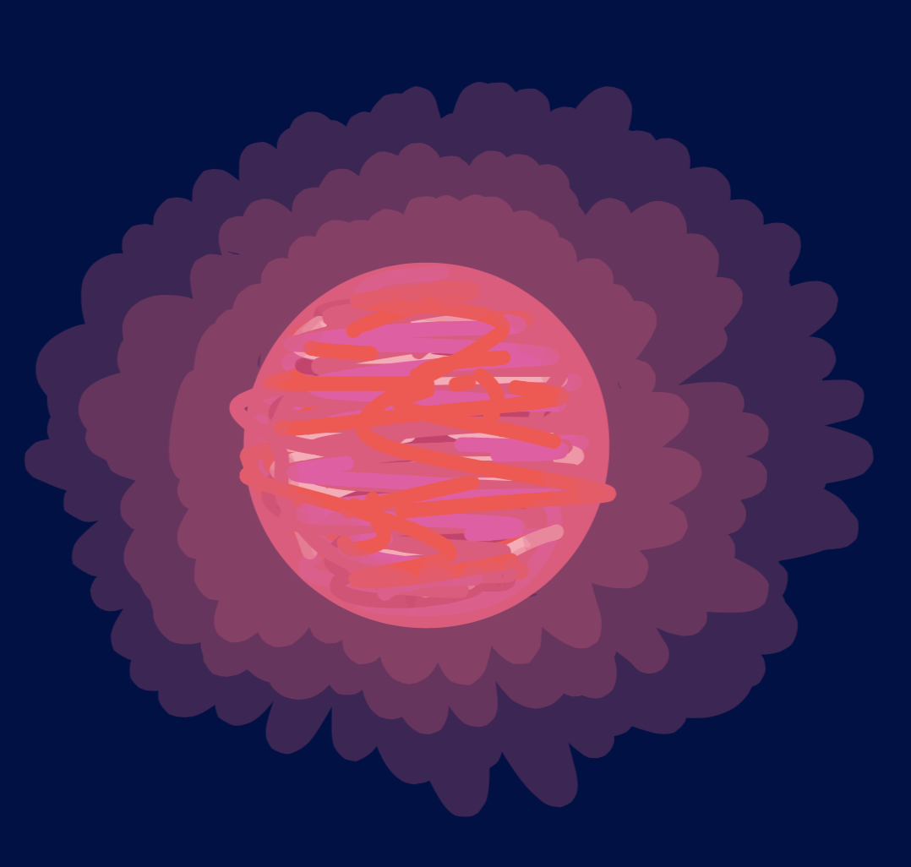
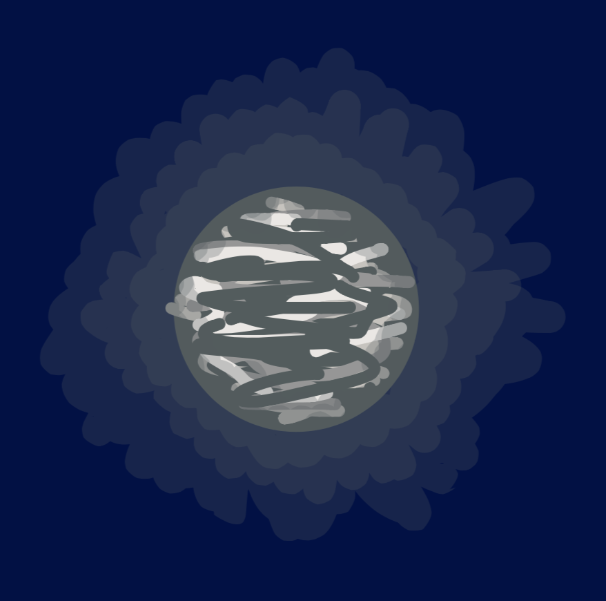

Well a brown dwarf has much more mass than a planet but still doesn't have enough to push it to fuse hydrogen into helium.
Don't get me wrong. A brown star would be cool but there is only red, yellow, blue and black. And a brown dwarf is black, but we couldn't call it a black dwarf because the name was used for another object. So the scientist, Jill Tarter named the object a Brown Dwarf and well, the name stuck.
In fact we do! But it was a hard process to get a picture. The problem was that it didn't emit any visible light but infrared light (We will talk about that in a future post.) But scientists found that in Brown dwarfs there was a characteristic thing that "normal" stars don't have. "Normal" stars went through their lithium supply very quickly, while Brown dwarfs never actually use up their lithium supply. With the help of that, scientists came upon a star called Tato 1 that was cooler than a lower mass star, so we needed another letter for it in the organization table so it was named an L dwarf.
Then another star was found Glisese 229 b and it was cooler than Tato 1 so it was assigned a T dwarf.
There was an even cooler Brown Dwarf and it was asigned a new letter: a Y dwarf.
Brown Dwarfs: Crash Course Astronomy #28. Phil Plait, Crash Course, August 13, 2015.